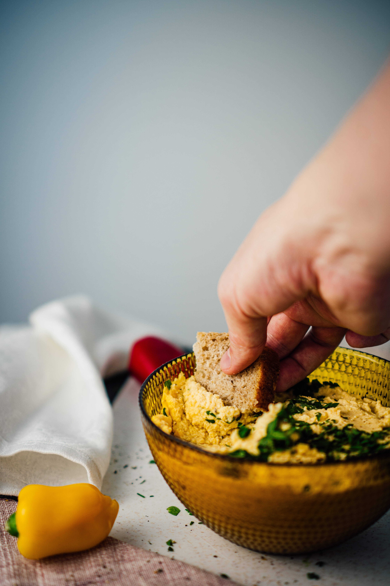

Sauerkraut Houmous Toast

Description
This Sauerkraut Houmous Toast gives you all the plant-based goodness! Toasted rye bread topped with creamy chickpeas, and tangy sauerkraut.
So good!
Ingredients
- 2 slices of 100% rye bread
- 2 heaped teaspoons of houmous
- 2 tbsp live-culture sauerkraut
Steps
- Put the rye bread in the toaster, and toast until slightly crisp.
- Spread the houmous evenly over both slices of toast.
- Top each houmous-covered slice with sauerkraut.